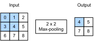

7.5. 汇聚¶
在许多情况下，我们的最终任务 会对图像提出某种全局问题， 例如，它包含猫吗？ 因此，最后一层的单元 应当对整个输入敏感。 通过逐步聚合信息， 得到越来越粗糙的特征图， 我们就能实现最终学习全局表示这一目标， 同时保留卷积层在处理中间层时的所有优势。 网络越深， 每个隐藏节点所敏感的感受野（相对于输入） 就越大。降低空间分辨率 会加速这一过程， 因为卷积核覆盖的有效区域更大了。
此外，在检测边缘等较低层次的特征时 （如 7.2节
中所讨论的）， 我们往往希望自己的表示在某种程度上对平移不变。
例如，如果我们取一幅黑白之间分界鲜明的图像X，
并将整幅图像向右移动一个像素， 即Z[i, j] = X[i, j + 1]，
那么新图像Z的输出可能大不相同。 边缘会平移一个像素。
在现实中，目标几乎不会恰好出现在同一个位置。
事实上，即使使用三脚架和静止的目标， 快门运动引起的相机振动
也可能使所有东西偏移一个像素左右
（高端相机配备了专门的功能来解决这个问题）。
本节介绍汇聚层（pooling layer）， 它有两个目的： 减轻卷积层对位置的敏感性， 以及对表示进行空间下采样。
import torch
from torch import nn
from d2l import torch as d2l
from mxnet import np, npx
from mxnet.gluon import nn
from d2l import mxnet as d2l
npx.set_np()
import jax
from flax import linen as nn
from jax import numpy as jnp
from d2l import jax as d2l
7.5.1. 最大汇聚与平均汇聚¶
与卷积层类似，汇聚（pooling）运算符 由一个固定形状的窗口组成， 该窗口根据其步幅滑过 输入中的所有区域， 为固定形状窗口（有时称为汇聚窗口） 遍历的每个位置计算一个输出。 然而，与卷积层中输入和核的互相关计算不同， 汇聚层不含参数（这里没有核）。 相反，汇聚运算符是确定性的， 通常计算汇聚窗口中元素的最大值或平均值。 这两种运算分别称为 最大汇聚（maximum pooling，简称max-pooling） 和平均汇聚（average pooling）。
平均汇聚与 CNN 本身差不多一样古老。其思想类似于 对图像进行下采样。与其只为低分辨率图像每隔一个（或每隔三个） 像素取值，我们可以对相邻像素求平均， 从而得到信噪比更好的图像，因为我们合并了 来自多个相邻像素的信息。最大汇聚由 Riesenhuber and Poggio (1999) 在认知神经科学背景下提出， 用于描述信息聚合如何可能为了 目标识别的目的而分层聚合；语音识别中已有更早的版本 (Yamaguchi et al., 1990)。在几乎所有情况下，最大汇聚（也常这样简称） 都优于平均汇聚。
在这两种情况下，与互相关运算符一样， 我们可以把汇聚窗口 看作从输入张量的左上角开始， 从左到右、从上到下地滑过输入。 在汇聚窗口到达的每个位置， 它计算窗口中输入子张量的最大值或平均值， 取决于采用的是最大汇聚还是平均汇聚。

图7.5.1 汇聚窗口形状为\(2\times 2\)的最大汇聚。阴影部分是第一个输出元素，以及用于输出计算的输入张量元素：\(\max(0, 1, 3, 4)=4\)。¶
图7.5.1 中的输出张量 高度为2、宽度为2。 四个元素来自每个汇聚窗口中的最大值：
更一般地，我们可以通过对某个大小区域进行聚合
来定义\(p \times q\)汇聚层。回到边缘检测问题，
我们将卷积层的输出 作为\(2\times 2\)最大汇聚的输入。
用X表示卷积层的输入，用Y表示汇聚层的输出。
无论X[i, j]、X[i, j + 1]、
X[i+1, j]和X[i+1, j + 1]的值是否不同，
汇聚层总是输出Y[i, j] = 1。
也就是说，使用\(2\times 2\)最大汇聚层， 我们仍然可以检测出
卷积层所识别的模式 是否在高度或宽度上移动不超过一个元素。
在下面的代码中，我们在pool2d函数中 实现汇聚层的前向传播。
这个函数与 7.2节 中的 corr2d函数类似。
然而，这里不需要核， 而是将输出计算为输入中每个区域的最大值或平均值。
def pool2d(X, pool_size, mode='max'):
p_h, p_w = pool_size
Y = torch.zeros((X.shape[0] - p_h + 1, X.shape[1] - p_w + 1))
for i in range(Y.shape[0]):
for j in range(Y.shape[1]):
if mode == 'max':
Y[i, j] = X[i: i + p_h, j: j + p_w].max()
elif mode == 'avg':
Y[i, j] = X[i: i + p_h, j: j + p_w].mean()
return Y
def pool2d(X, pool_size, mode='max'):
p_h, p_w = pool_size
Y = np.zeros((X.shape[0] - p_h + 1, X.shape[1] - p_w + 1))
for i in range(Y.shape[0]):
for j in range(Y.shape[1]):
if mode == 'max':
Y[i, j] = X[i: i + p_h, j: j + p_w].max()
elif mode == 'avg':
Y[i, j] = X[i: i + p_h, j: j + p_w].mean()
return Y
def pool2d(X, pool_size, mode='max'):
p_h, p_w = pool_size
Y = jnp.zeros((X.shape[0] - p_h + 1, X.shape[1] - p_w + 1))
for i in range(Y.shape[0]):
for j in range(Y.shape[1]):
if mode == 'max':
Y = Y.at[i, j].set(X[i: i + p_h, j: j + p_w].max())
elif mode == 'avg':
Y = Y.at[i, j].set(X[i: i + p_h, j: j + p_w].mean())
return Y
import tensorflow as tf
def pool2d(X, pool_size, mode='max'):
p_h, p_w = pool_size
Y = tf.Variable(tf.zeros((X.shape[0] - p_h + 1, X.shape[1] - p_w +1)))
for i in range(Y.shape[0]):
for j in range(Y.shape[1]):
if mode == 'max':
Y[i, j].assign(tf.reduce_max(X[i: i + p_h, j: j + p_w]))
elif mode =='avg':
Y[i, j].assign(tf.reduce_mean(X[i: i + p_h, j: j + p_w]))
return Y
我们可以构造 图7.5.1 中的输入张量X，
以验证二维最大汇聚层的输出。
X = torch.tensor([[0.0, 1.0, 2.0], [3.0, 4.0, 5.0], [6.0, 7.0, 8.0]])
pool2d(X, (2, 2))
X = np.array([[0.0, 1.0, 2.0], [3.0, 4.0, 5.0], [6.0, 7.0, 8.0]])
pool2d(X, (2, 2))
X = jnp.array([[0.0, 1.0, 2.0], [3.0, 4.0, 5.0], [6.0, 7.0, 8.0]])
pool2d(X, (2, 2))
X = tf.constant([[0.0, 1.0, 2.0], [3.0, 4.0, 5.0], [6.0, 7.0, 8.0]])
pool2d(X, (2, 2))
此外，我们还可以试验平均汇聚层。
pool2d(X, (2, 2), 'avg')
7.5.2. 填充与步幅¶
与卷积层一样，汇聚层 也会改变输出形状。
和之前一样，我们可以通过填充输入并调整步幅
来调整运算，以达到期望的输出形状。 我们可以通过深度学习框架内置的
二维最大汇聚层 来演示汇聚层中填充和步幅的使用。
我们首先构造一个形状为四维的输入张量X，
其中样例数（批量大小）和通道数都为1。
X = torch.arange(16, dtype=torch.float32).reshape((1, 1, 4, 4))
X
X = np.arange(16, dtype=np.float32).reshape((1, 1, 4, 4))
X
X = jnp.arange(16, dtype=jnp.float32).reshape((1, 4, 4, 1))
X
注意，与其他框架不同，TensorFlow 偏好并针对通道在后（channels-last）的输入进行了优化。
X = tf.reshape(tf.range(16, dtype=tf.float32), (1, 4, 4, 1))
X
由于汇聚会聚合一整片区域的信息，
深度学习框架默认使汇聚窗口大小与步幅相匹配。
例如，如果我们使用形状为(3, 3)的汇聚窗口，
那么默认情况下会得到形状为(3, 3)的步幅。
pool2d = nn.MaxPool2d(3)
# Pooling has no model parameters, hence it needs no initialization
pool2d(X)
pool2d = nn.MaxPool2D(3)
# Pooling has no model parameters, hence it needs no initialization
pool2d(X)
# Pooling has no model parameters, hence it needs no initialization
nn.max_pool(X, window_shape=(3, 3), strides=(3, 3))
pool2d = tf.keras.layers.MaxPool2D(pool_size=[3, 3])
# Pooling has no model parameters, hence it needs no initialization
pool2d(X)
不用说，如有需要，可以 手动指定步幅和填充 来覆盖框架的默认值。
pool2d = nn.MaxPool2d(3, padding=1, stride=2)
pool2d(X)
pool2d = nn.MaxPool2D(3, padding=1, strides=2)
pool2d(X)
X_padded = jnp.pad(X, ((0, 0), (1, 0), (1, 0), (0, 0)), mode='constant')
nn.max_pool(X_padded, window_shape=(3, 3), padding='VALID', strides=(2, 2))
paddings = tf.constant([[0, 0], [1,0], [1,0], [0,0]])
X_padded = tf.pad(X, paddings, "CONSTANT")
pool2d = tf.keras.layers.MaxPool2D(pool_size=[3, 3], padding='valid',
strides=2)
pool2d(X_padded)
当然，我们也可以分别指定 任意高度和宽度的任意矩形汇聚窗口， 如下面的例子所示。
pool2d = nn.MaxPool2d((2, 3), stride=(2, 3), padding=(0, 1))
pool2d(X)
pool2d = nn.MaxPool2D((2, 3), padding=(0, 1), strides=(2, 3))
pool2d(X)
X_padded = jnp.pad(X, ((0, 0), (0, 0), (1, 1), (0, 0)), mode='constant')
nn.max_pool(X_padded, window_shape=(2, 3), strides=(2, 3), padding='VALID')
paddings = tf.constant([[0, 0], [0, 0], [1, 1], [0, 0]])
X_padded = tf.pad(X, paddings, "CONSTANT")
pool2d = tf.keras.layers.MaxPool2D(pool_size=[2, 3], padding='valid',
strides=(2, 3))
pool2d(X_padded)
7.5.3. 多通道¶
在处理多通道输入数据时， 汇聚层分别对每个输入通道进行汇聚，
而不是像卷积层那样 在通道上对输入求和。 这意味着汇聚层的输出通道数
与输入通道数相同。 下面，我们将张量X和X + 1
在通道维度上连结，以构造一个具有两个通道的输入。
X = torch.cat((X, X + 1), 1)
X
X = np.concatenate((X, X + 1), 1)
X
# Concatenate along `dim=3` due to channels-last syntax
X = jnp.concatenate([X, X + 1], 3)
X
注意，由于采用了通道在后的语法， 对 TensorFlow 来说，这需要沿最后一个维度进行连结。
# Concatenate along `dim=3` due to channels-last syntax
X = tf.concat([X, X + 1], 3)
X
可以看到，汇聚之后的输出通道数仍然是两个。
pool2d = nn.MaxPool2d(3, padding=1, stride=2)
pool2d(X)
pool2d = nn.MaxPool2D(3, padding=1, strides=2)
pool2d(X)
X_padded = jnp.pad(X, ((0, 0), (1, 0), (1, 0), (0, 0)), mode='constant')
nn.max_pool(X_padded, window_shape=(3, 3), padding='VALID', strides=(2, 2))
paddings = tf.constant([[0, 0], [1,0], [1,0], [0,0]])
X_padded = tf.pad(X, paddings, "CONSTANT")
pool2d = tf.keras.layers.MaxPool2D(pool_size=[3, 3], padding='valid',
strides=2)
pool2d(X_padded)
注意，TensorFlow 的汇聚输出乍看之下似乎不同，然而 在数值上呈现的结果与 MXNet 和 PyTorch 相同。 差别在于维度，垂直地读取 输出会得到与其他实现相同的输出。
7.5.4. 小结¶
汇聚是一个极其简单的运算。它做的正是其名称所示的事情：在一个取值窗口上聚合结果。所有卷积语义（例如步幅和填充）都以与之前相同的方式适用。注意，汇聚对通道一视同仁，即它保持通道数不变，并对每个通道分别应用。最后，在两种流行的汇聚选择中，最大汇聚优于平均汇聚，因为它赋予输出一定程度的不变性。一种常见的选择是取\(2 \times 2\)的汇聚窗口大小，将输出的空间分辨率降为四分之一。
注意，除汇聚之外还有许多降低分辨率的方法。例如，在随机汇聚 (Zeiler and Fergus, 2013) 和分数最大汇聚 (Graham, 2014) 中，聚合与随机化结合在一起。这在某些情况下可以略微提高准确率。最后，正如我们稍后在注意力机制中将看到的，还有更精细的输出聚合方式，例如利用查询与表示向量之间的对齐。
7.5.5. 练习¶
通过卷积实现平均汇聚。
证明仅通过卷积无法实现最大汇聚。
最大汇聚可以用 ReLU 运算实现，即\(\textrm{ReLU}(x) = \max(0, x)\)。
仅使用 ReLU 运算表示\(\max (a, b)\)。
利用这一点，通过卷积和 ReLU 层实现最大汇聚。
对于\(2 \times 2\)卷积，你需要多少个通道和层？对于\(3 \times 3\)卷积又需要多少？
汇聚层的计算代价是多少？假设汇聚层的输入大小为\(c\times h\times w\)，汇聚窗口的形状为\(p_\textrm{h}\times p_\textrm{w}\)，填充为\((p_\textrm{h}, p_\textrm{w})\)，步幅为\((s_\textrm{h}, s_\textrm{w})\)。
为什么你认为最大汇聚和平均汇聚会以不同方式工作？
我们需要单独的最小汇聚层吗？能否用其他运算替代它？
我们可以用 softmax 运算来进行汇聚。为什么它可能不那么流行？